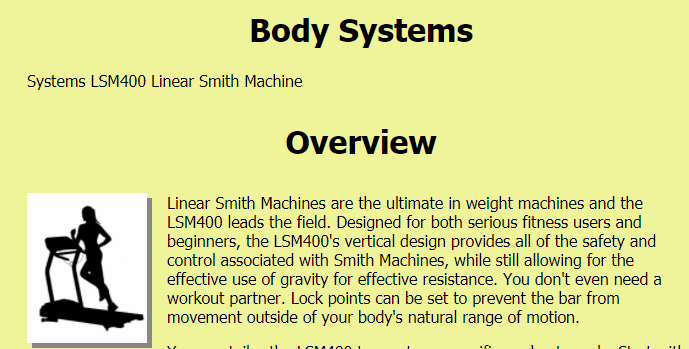

Aishe N Ibrahim
Pronounced EYE-sha EE-brah-HIMStudent: Web Development
I am a first year web development student at Wake Technical Community College.
Featured Projects
View selected projects below. More information can be found at Github.
Vicious Cycles

This is one of my first assignments with CSS and HTML. It is a mock business website.
View projectQueen Concert Order Page

This is a mock concert order page for a website. The languages used to code it include HTML, CSS and PHP using the apache server.
View projectMelanie's Hair Salon

This is my very first web page as a student at Wake Tech. It uses HTML and inline design style.
View projectBody Systems
This is a mock business web site for workout equipment. It uses inline CSS.
View projectWork Experience
I am changing careers to be a part of the web development community. I do have a background in healthcare.
Patient Service Coordinator
CORA Physical Therapy
5-2018 to PRESENT
Greeting and welcoming patients; manage patient schedule including scheduling new patients, ensuring all patients active are scheduled and coordinate daily schedule to maintain clinical efficiency, verified insurance for treatment, collected copayment from patient for services, reconcile daily cash and credit card reports, responsible for bank deposit, responsible for registration of new patients, appointment scheduling, facilitated flow of evaluations, progress notes and discharges to referring providers complying with HIPAA standards; utilize knowledge of Microsoft and Excel to pull and report to clinic manager of pertinent information, facilitate collection of emails, cell phone numbers and basic patient information
Lead Registered Medical Assistant
Cary Medical Clinic
10-2018 to 5-2018
Supervised daily staff activities; established and effective and smooth work environment, oversaw and organized office staff including scheduling, appropriate medical training, implementation of job duties, manage and implement OSHA and HIPPA compliance; Triage; Room patients; Phlebotomy; Order labs; Prior authorizations; Prescription refills; Call patients with lab results; EKGs; Vaccinations; Enter codes for billing; Submit referrals; Set-up exam trays; Perform strep tests and flu tests; Glucose testing; In house urinalysis; Input information into the EHR system; Answer phones; Schedule appointments; Input new patient information; Demographics; Collect and process copays; In-house laboratory testing; Prepare and transmit lab orders; Clear facsimile; scan and attach document’s to patient chart accordingly; Perform HEDIS when appropriate following HIPAA guidelines; maintain petty cash log when appropriate; Scribing medical charts
Pharmacy Technician
Kerr Drug
2-2007 to 8-2010
Received written prescription to refill requests and verified information was complete and accurate; Entered demographic information for patients; Updated insurance information; Submitted prescriptions for refill; Filled prescriptions; Performed weekly inventory management; Performed restocking of medications not picked up; Answered telephones and responded to questions and requests; Maintained proper storage and security conditions for prescriptions
Crew Lead
Sundance Cleaning Company
2-2013 to 11-2013
Key holder responsible for cleaning residential homes; Supervise cleaning crew; Train new employees; Communicate with main office any issues; Submit reports on new employees.
Education
Wake Technical Community College - Raleigh
Associate of Web Development - currently attending
Southern New Hampshire University - Manchester, New Hampshire
Bachelor of Science Business Administration, 2020
Miller-Motte College - Raleigh
Associate of Science Medical Assisting, 2016
Graduated Magna Cum Laude
Franklinton High School - Franklinton
High School Diploma, 2010